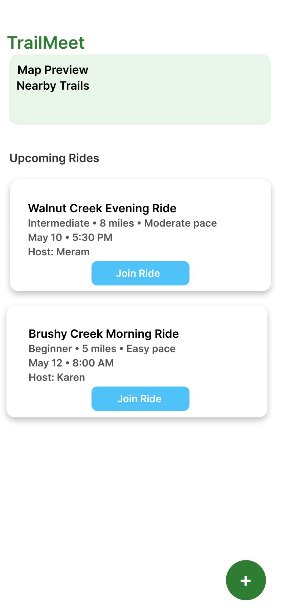
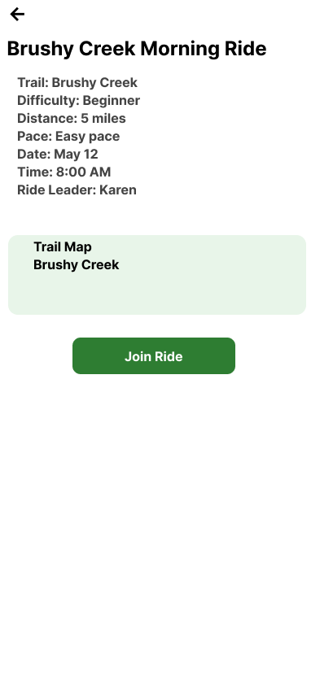
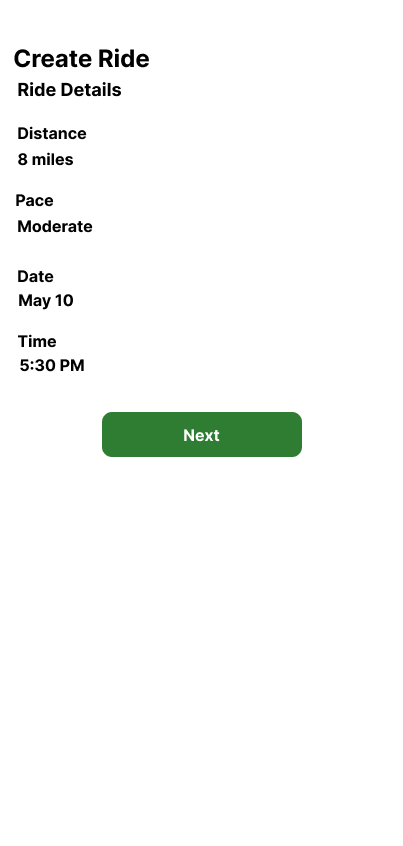
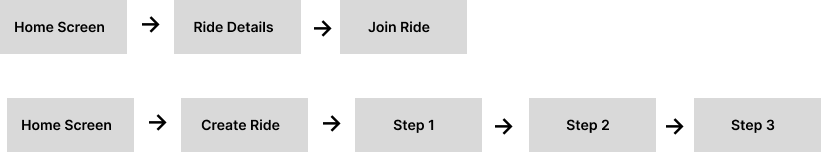
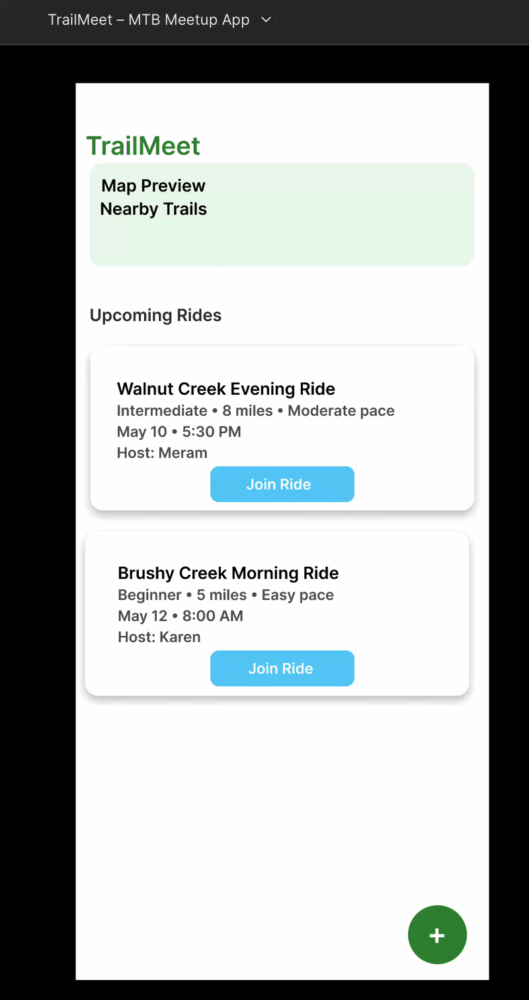

This diagram shows how riders navigate the TrailMeet app to discover rides or create a new one.

This short demo shows how riders can discover rides, view ride details, and create a new ride using the TrailMeet app.

TrailMeet is a mobile UX concept designed to simplify how mountain bikers organize and join group rides. The project explores a clearer alternative to organizing rides through Facebook or Strava posts.
UX/UI Designer — I identified the problem, created wireframes, designed the interface in Figma, and built an interactive prototype.
Figma, HTML, CSS, GitHub Pages
Mountain bike rides are often organized through social media posts where important details are buried in comments. Riders frequently struggle to understand difficulty level, ride distance, pace, or who will attend.
Design a simple mobile experience that allows riders to easily discover rides and create new ones with clear information about difficulty, distance, and meeting time.
The design process included defining the problem, sketching wireframes, creating high-fidelity screens in Figma, and building an interactive prototype.
The final design includes a home screen, ride details screens, and a guided ride creation flow.



The prototype includes a home screen with upcoming rides, detailed ride information pages, and a step-by-step ride creation flow.
You can click through the TrailMeet prototype below to explore the ride discovery and ride creation flow designed in Figma.
Back to Portfolio